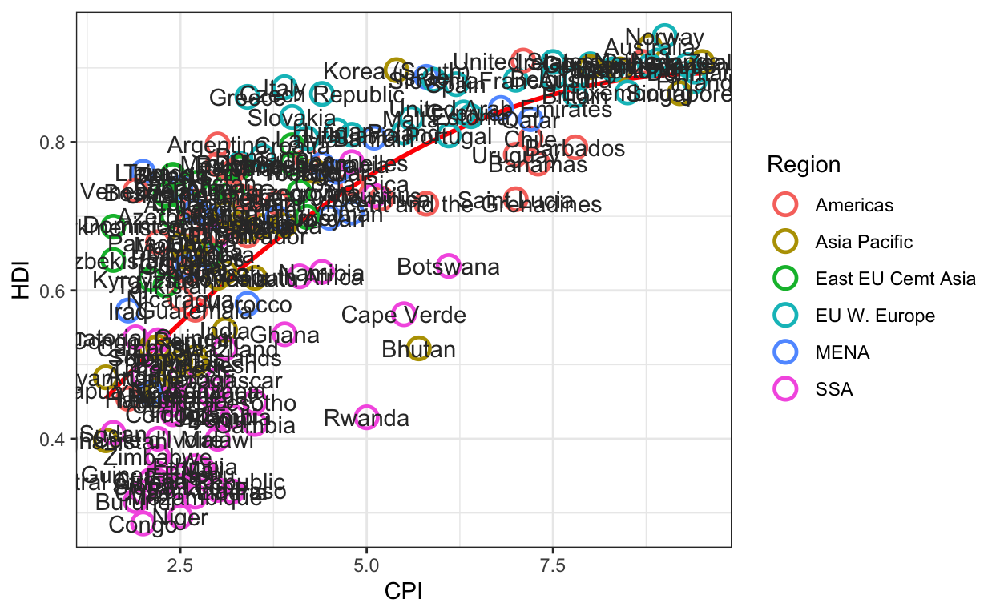

An example

Let’s start with a basic plot of the data
The data is already pre-loaded.
ggplot(econ_data,
aes(x = CPI, y = HDI, color=Region))+
geom_point()Add a trend line
ggplot(econ_data,
aes(x = CPI, y = HDI, color=Region))+
geom_point() +
geom_smooth(color='red', se=T)Note that this uses a lowess smoother.
- Can you modify the code to change the smoother to a quadratic polynomial, so that it’s closer to the original graph (see documentation)?
- Also, can you get rid of the confidence bands, for a cleaner graph?
ggplot(econ_data,
aes(x = CPI, y = HDI, color=Region))+
geom_point() +
geom_smooth(color='red', se=F, method = 'lm', formula = y~poly(x,2))Ordering layers
If you look at the original plot, the points are drawn on top of the line. We can achieve this by reversing the order of the line and points in the ggplot code.
ggplot(econ_data,
aes(x = CPI, y = HDI, color=Region))+
geom_smooth(color='red', se=F, method='lm', formula = y~poly(x,2)) +
geom_point()Let’s mimic the style of the points
Play around with the size and stroke options ingeom_point to change the look of the points
ggplot(econ_data,
aes(x = CPI, y = HDI, color=Region))+
geom_smooth(color='red', se=F, method = 'lm', formula = y~poly(x,2)) +
geom_point(shape = 1, size = 2, stroke=1)#<<Now let’s add labels of the countries
ggplot(econ_data,
aes(x = CPI, y = HDI, color=Region))+
geom_smooth(color='red', se=F, method='lm', formula = y~poly(x,2)) +
geom_point(shape = 1, size = 4, stroke=1.25) +
geom_text(aes(label=Country),
color = 'gray20')
Oh boy!!! Let’s see if we can cull this mess down
One important tool here is that in any geom, you can update the data set, as long as the variables and general context are the same as the base plot. We take advantage of this to limit the set of countries that get labels.
You can further select which countries get labeled to see if the plot can be cleaner.
Also, see what happens if you replace geom_text with geom_label
pointsToLabel <- c("Russia", "Venezuela", "Iraq", "Myanmar", "Sudan",
"Afghanistan", "Congo", "Greece", "Argentina", "Brazil",
"India", "Italy", "China", "South Africa", "Spain",
"Botswana", "Cape Verde", "Bhutan", "Rwanda", "France",
"United States", "Germany", "Britain", "Barbados", "Norway", "Japan",
"New Zealand", "Singapore")
ggplot(econ_data,
aes(x = CPI, y = HDI, color=Region))+
geom_smooth(color='red', se=F, method = 'lm', formula = y~poly(x,2)) +
geom_point(shape = 1, size = 4, stroke=1.25) +
geom_text(aes(label=Country),
color = 'gray20',
data = econ_data %>%
dplyr::filter(Country %in% pointsToLabel))You can also play around with the text color to see what happens. gray20 means 20% gray.
Reducing overlay of points and labels
We need to move the labels off the actual points to make them easier to read. We’ll use the ggrepel library to help make sure we have less overlap in the graph elements
library(ggrepel)
pointsToLabel <- c("Russia", "Venezuela", "Iraq", "Myanmar", "Sudan",
"Afghanistan", "Congo", "Greece", "Argentina", "Brazil",
"India", "Italy", "China", "South Africa", "Spane",
"Botswana", "Cape Verde", "Bhutan", "Rwanda", "France",
"United States", "Germany", "Britain", "Barbados", "Norway", "Japan",
"New Zealand", "Singapore")
(plt <- ggplot(econ_data,
aes(x = CPI, y = HDI, color=Region))+
geom_smooth(color='red', se=F, method='lm', formula = y~poly(x,2)) +
geom_point(shape = 1, size = 4, stroke=1.25) +
geom_text_repel(aes(label=Country),#<<
color = 'gray20',
force=10,
data = econ_data %>%
dplyr::filter(Country %in% pointsToLabel)))library(ggrepel)
pointsToLabel <- c("Russia", "Venezuela", "Iraq", "Myanmar", "Sudan",
"Afghanistan", "Congo", "Greece", "Argentina", "Brazil",
"India", "Italy", "China", "South Africa", "Spane",
"Botswana", "Cape Verde", "Bhutan", "Rwanda", "France",
"United States", "Germany", "Britain", "Barbados", "Norway", "Japan",
"New Zealand", "Singapore")
(plt <- ggplot(econ_data,
aes(x = CPI, y = HDI, color=Region))+
geom_smooth(color='red', se=F, method='lm', formula = y~poly(x,2)) +
geom_point(shape = 1, size = 4, stroke=1.25) +
geom_text_repel(aes(label=Country),#<<
color = 'gray20',
force=10,
data = econ_data %>%
dplyr::filter(Country %in% pointsToLabel)))Play around with the force= option to see how that will affect where the labels are placed. This parameter controls the repulsive force between the labels.
Note that we are now saving the plot in the variable plt. This can come in useful as we further tweak the graph
Re-labeling the regions
In order to match the region names with the original graph, we need to do a bit of recoding of the factor.
The following code uses the factor function to explicitly reset the labels, and updates the plot just by updating the data element of the plt object.
We can also do this same data transformation using functions from the ** forcats** package. Change the code for data transformation to use pipes and functions from the forcats package.
Note that we have a bunch of \n in the labels. This stands for newline and will put a line break at that point.
econ_data$Region <-
factor(econ_data$Region,
levels = c("EU W. Europe",
"Americas",
"Asia Pacific",
"East EU Cemt Asia",
"MENA",
"SSA"),
labels = c("OECD",
"Americas",
"Asia &\nOceania",
"Central &\nEastern Europe",
"Middle East &\nnorth Africa",
"Sub-Saharan\nAfrica"))
plt$data = econ_data
plt econ_data <- econ_data %>%
mutate(Region = fct_recode(Region,
'OECD' = 'EU W. Europe',
'Asia &\nOceania' = 'Asia Pacific',
'Central &\nEastern Europe' = 'East EU Cemt Asia',
'Middle East &\nNorth Africa'='MENA',
'Sub-Saharan\nAfrica' = 'SSA'
))
plt$data <- econ_data
pltecon_data <- econ_data %>%
mutate(Region = fct_recode(Region,
'OECD' = 'EU W. Europe',
'Asia &\nOceania' = 'Asia Pacific',
'Central &\nEastern Europe' = 'East EU Cemt Asia',
'Middle East &\nNorth Africa'='MENA',
'Sub-Saharan\nAfrica' = 'SSA'
)) %>%
mutate(Region = fct_relevel(Region,
"OECD",
"Americas",
"Asia &\nOceania",
"Central &\nEastern Europe",
"Middle East &\nNorth Africa",
"Sub-Saharan\nAfrica"))
plt$data <- econ_data
pltecon_data <- econ_data %>%
mutate(Region = fct_recode(Region,
'OECD' = 'EU W. Europe',
'Asia &\nOceania' = 'Asia Pacific',
'Central &\nEastern Europe' = 'East EU Cemt Asia',
'Middle East &\nNorth Africa'='MENA',
'Sub-Saharan\nAfrica' = 'SSA'
)) %>%
mutate(Region = fct_relevel(Region,
"OECD",
"Americas",
"Asia &\nOceania",
"Central &\nEastern Europe",
"Middle East &\nNorth Africa",
"Sub-Saharan\nAfrica"))
plt$data <- econ_dataPosition of the legend
Let’s move the legend above the graph. The last line of code ensures the legend is in one row
plt + theme(legend.____ = 'top',
legend.____ = 'horizontal')+
guides(color = guide_legend(nrow=1))plt + theme(legend.position = 'top',
legend.direction = 'horizontal')+
guides(color = guide_legend(nrow=1))plt=plt + theme(legend.position = 'top',
legend.direction = 'horizontal')+
guides(color = guide_legend(nrow=1))Updating colors
You can actually customize colors of the points by specifying the colors in order of the factor levels. You can specify colors in 3 ways
- By name (like
blue,periwinkle,chartreuse, etc.) - By RGB code
- RGB is relative levels of red, green and blue, and is a common way of designating colors in visual media.
- You would specify it by
rgb(100,0,34)as the levels of red, green and blue on a scale between 0 and 255.
- By hex code
- These are 6 alphanumeric characters (0-9, A-F) that also specify red, green and blue levels, with 2 characters for each color
- Hex codes or hexadecimal codes, allow for 16 possibilities per “digit”, so 0,1, …, 9, A, …, F gives 16 values. 2 such digits gives 16x16=256 possible values.
How do you figure these out? Couple of sites I use are ttps://www.color-hex.com and https://www.w3schools.com/colors/colors_picker.asp
(plt <- plt + scale_color_manual(name = '',
values = c("#24576D",
"#099DD7",
"#28AADC",
"#248E84",
"#F2583F",
"#96503F")))plt <- plt + scale_color_manual(name = '',
values = c("#24576D",
"#099DD7",
"#28AADC",
"#248E84",
"#F2583F",
"#96503F"))Final cleaning
You can now add the labels and titles to make this plot like the original. For a reminder, here is the original plot

label
(plt_corrupt <-
plt +
labs(title = "Corruption and Human Development")
)plt_corrupt <-
plt +
labs(title = 'Corruption and Human Development')Customization
You can change the default fonts for each element of the plot, if you like. The extrafont package allows you to use any fonts installed on your computer in the graph.
You first need to run a few commands, that may take a bit of time, on your computer. You can open up another RStudio instance to run this.
This can take a few minutes. Once this is run, you can play around
library(extrafont)
plt_corrupt +
theme(title = element_text(family = 'Georgia'),
axis.title = element_text(family='Roboto Slab'),
legend.text = element_text(family='Comic Sans MS')) # don't do this